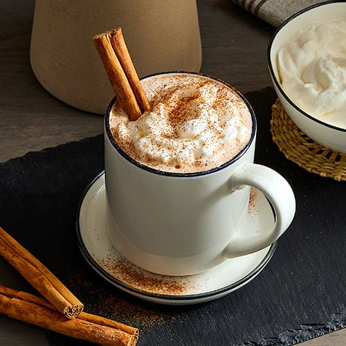

Cinnamon Brown Sugar Coffee

Description
This quick and easy coffee will be a great way to spruce up your fall mornings.
Ingredients
- 1 8oz keurig coffee pod of your choice
- 1/4c oatmilk
- 1tsp of cinnamon
- 1 tablespoon of brown sugar
Steps
- Brew 8oz of your favorite coffee.
- In a frother or a blender, whip your oatmilk until it is thicker
in consistency and has a foam on top.
- Add the brown sugar to your coffee and stir until dissolved.
- Pour the oatmilk into your coffee.
- Sprinkle the cinnamon on top of the coffee.